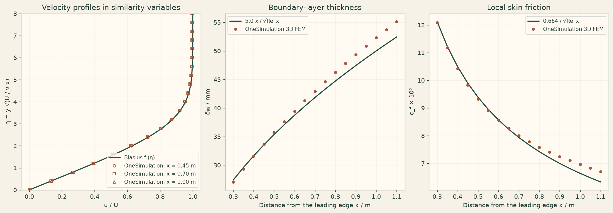

Docs › Examples › Laminar boundary layer on a flat plate
Incompressible flow · 2D
Laminar boundary layer on a flat plate
The two-dimensional laminar boundary layer growing along a flat plate, graded against the Blasius similarity solution.

What it computes
OneSimulation solves the steady incompressible Navier-Stokes equations with Taylor-Hood elements and Newton iteration over the plate from Re_x = 2000 to 12000, with no-slip on the plate, open outflow and far field, and compares velocity profiles, boundary-layer thickness and wall friction with the Blasius equation solved in the notebook.
What it checks
Velocity profiles are within 1 % of the free-stream speed of the similarity profile, boundary-layer thickness and skin friction within 6 % along the plate, and the flow stays two-dimensional.
The notebook
The complete notebook, cell by cell. Run it to produce the figures and the comparison printout.
A uniform stream of speed \(U\) flows along a thin flat plate. Viscosity brings the fluid to rest on the plate, and a thin boundary layer grows along it. For a steady, laminar, zero-pressure-gradient layer Prandtl's boundary-layer equations admit the similarity solution found by Blasius (1908): with \(\eta = y\sqrt{U/(\nu x)}\) and the stream function \(\psi=\sqrt{\nu U x}\,f(\eta)\),
so that \(u/U = f'(\eta)\) at every station \(x\) measured from the leading edge, and \(v = \tfrac12\sqrt{\nu U/x}\,(\eta f'-f)\). The numerical constant \(f''(0)=0.33206\) fixes the wall shear stress.
OneSimulation solves the full stationary incompressible Navier-Stokes system \(\rho(u\cdot\nabla)u=-\nabla p+\mu\nabla^2 u\) with inf-sup stable Taylor-Hood finite elements (quadratic velocity, linear pressure) and a Newton solver, with no boundary-layer approximation. A thin slab made periodic in \(z\) reproduces the two-dimensional flow in the native 3D formulation.
Reference. From the Blasius solution (Schlichting & Gersten, Boundary-Layer Theory, chapter 6):
The computational domain starts at a station \(x_0\) downstream of the leading edge, where the Blasius profile (including its small outward velocity \(v\)) is prescribed as the inflow. The leading edge itself is a singular point at which the similarity solution does not hold, and forcing a uniform inflow with \(v=0\) right at the edge would over-constrain the outer flow. Over the plate length \(L=5x_0\) the layer thickens by a factor \(\sqrt{6}\approx 2.4\) and the wall shear drops by the same factor; the solver has to reproduce this growth from the momentum balance. We integrate the Blasius equation in the notebook (shooting with solve_ivp), then check that the profiles at three stations collapse onto \(f'(\eta)\) and that \(\delta_{99}(x)\) and \(c_f(x)\) follow the \(\sqrt{x}\) and \(1/\sqrt{x}\) laws.
from importlib.metadata import version
import numpy as np
import matplotlib.pyplot as plt
from scipy.integrate import solve_ivp
from scipy.optimize import brentq
from onesim.cad.d3 import Box
from onesim.materials import NewtonianFluid
from onesim.meshing import StructuredTetrahedralMesher
from onesim.meshing.generation.declarations import PeriodicPair
from onesim.numerics import Numerics
from onesim.numerics.fem import FiniteElement, TaylorHood
from onesim.numerics.linear import SparseDirect
from onesim.numerics.nonlinear import Newton
from onesim.physics.hydrodynamics import (
FixedVelocity, FlowTraction, IncompressibleNavierStokes, NoSlipWall,
)
from onesim.simulation import Problem, Simulation
from onesim.simulation.initial_conditions.values import InitialValue
from onesim.simulation.problem_definition.boundaries import PeriodicBoundary
print("OneSimulation:", version("onesimulation"))Parameters
The plate Reynolds number at the end of the domain, \(Re_{x}=U(x_0+L)/\nu=1.2\cdot10^4\), keeps the layer laminar (transition starts near \(Re_x\approx 5\cdot 10^5\)). The far-field boundary at height \(H\) lies 4.5 boundary-layer thicknesses above the end of the plate, so the plate's displacement effect on the outer stream stays small.
x_start = 0.2 # m, distance x_0 of the inflow plane from the leading edge
plate_length = 1.0 # m, length L of the simulated plate section (x)
height = 0.25 # m, far-field height H (y)
span = 0.05 # m, thin out-of-plane extent (made periodic in z)
free_stream = 1.0 # m/s, free-stream speed U
rho = 1.0 # kg/m^3, density
mu = 1.0e-4 # Pa·s, dynamic viscosity
nu = mu / rho
x_end = x_start + plate_length
delta_end = 5.0 * x_end / np.sqrt(free_stream * x_end / nu)
print(f"Re_x from {free_stream*x_start/nu:.0f} (inflow) to {free_stream*x_end/nu:.0f} (outflow), "
f"delta_99 from {1000*5.0*x_start/np.sqrt(free_stream*x_start/nu):.1f} mm to {1000*delta_end:.1f} mm, "
f"H / delta_99(end) = {height/delta_end:.1f}")Blasius reference
Shooting on \(f''(0)\) so that \(f'(\eta_\max)=1\) far from the wall. Beyond \(\eta_\max\) the solution continues linearly, \(f=\eta-\beta\) with \(\beta\approx1.7208\).
def blasius_rhs(eta, state):
f, fp, fpp = state
return (fp, fpp, -0.5 * f * fpp)
eta_max = 10.0
def shoot(fpp0):
sol = solve_ivp(blasius_rhs, (0.0, eta_max), (0.0, 0.0, fpp0), rtol=1e-10, atol=1e-12)
return sol.y[1, -1] - 1.0
wall_curvature = brentq(shoot, 0.2, 0.5, xtol=1e-12)
blasius = solve_ivp(blasius_rhs, (0.0, eta_max), (0.0, 0.0, wall_curvature),
dense_output=True, rtol=1e-10, atol=1e-12)
f_max = blasius.sol(eta_max)[0]
print(f"Blasius f''(0) = {wall_curvature:.5f} (tabulated 0.33206), "
f"displacement constant beta = eta - f = {eta_max - f_max:.4f} (tabulated 1.7208)")
assert abs(wall_curvature - 0.33206) < 1e-4
def blasius_f_and_fprime(eta):
eta = np.asarray(eta, dtype=float)
inside = np.minimum(eta, eta_max)
f, fp, _ = blasius.sol(inside)
f = np.where(eta > eta_max, f_max + (eta - eta_max), f)
fp = np.where(eta > eta_max, 1.0, fp)
return f, fp
def blasius_velocity(x, y):
# Blasius (u, v) at distance x from the leading edge and wall distance y.
eta = y * np.sqrt(free_stream / (nu * x))
f, fp = blasius_f_and_fprime(eta)
u = free_stream * fp
v = 0.5 * np.sqrt(nu * free_stream / x) * (eta * fp - f)
return u, vModel
The bottom face is the no-slip plate. The inflow face carries the Blasius profile at \(x_0\) (which vanishes on the plate, so the prescribed trace is single-valued where the two faces meet). The outflow face and the far-field top face are traction-free open boundaries, which also fix the pressure level and let the displaced fluid leave. The two faces normal to \(z\) form one periodic pair. Every one of the six boundary faces therefore carries an explicit condition. The mesh is anisotropic: fine across the layer (\(y\)), coarser along the plate (\(x\)).
cells_x, cells_y = 20, 50
geometry = Box(length=plate_length, width=height, height=span)
mesh = StructuredTetrahedralMesher(cells=(cells_x, cells_y, 1)).generate(geometry)
wall_cell = height / cells_y
print("Mesh:", mesh.cell_count, "tetrahedra, wall cell height", f"{1000*wall_cell:.2f} mm")
fluid = NewtonianFluid(density=rho, dynamic_viscosity=mu)
def inflow(y):
# Blasius profile at the inflow station x_0 (the box coordinate x = 0).
u, v = blasius_velocity(x_start, y)
return np.column_stack((u, v, np.zeros_like(y)))
def traction_free(y):
# Zero Cauchy traction: open boundary with zero gauge pressure.
return np.zeros((len(y), 3))
model = IncompressibleNavierStokes(domain=geometry.volume, material=fluid)
open_faces = geometry.boundaries.x_max | geometry.boundaries.y_max
spanwise = PeriodicPair(first=geometry.boundaries.z_min, second=geometry.boundaries.z_max)
problem = Problem(
name="Blasius flat-plate boundary layer",
geometry=geometry,
physics=(model,),
boundary_conditions=(
NoSlipWall(boundary=geometry.boundaries.y_min, physics=model),
FixedVelocity(boundary=geometry.boundaries.x_min, physics=model, value=inflow),
FlowTraction(boundary=open_faces, physics=model, value=traction_free),
PeriodicBoundary(pair=spanwise, physics=model),
),
initial_conditions=(InitialValue(model.velocity, (free_stream, 0.0, 0.0)),),
)
simulation = Simulation(
problem=problem,
mesh=mesh,
numerics=Numerics(
spatial=FiniteElement(element=TaylorHood()),
nonlinear_solver=Newton(
linear_solver=SparseDirect(), absolute_tolerance=1e-9, relative_tolerance=1e-10,
maximum_iterations=40,
),
initial_guess={model.velocity: (free_stream, 0.0, 0.0)},
),
)
result = simulation.solve_stationary()
velocity_field = result.field(model.velocity)
def sample_velocity(x, y):
# x is the distance from the leading edge; the box starts at x_0.
points = np.column_stack((np.full_like(y, x - x_start), y, np.full_like(y, span / 2.0)))
return np.asarray(velocity_field.evaluate(points))Comparison with the Blasius solution
Three stations well inside the domain are sampled along wall-normal lines. Plotted against \(\eta\), the profiles must collapse onto \(f'(\eta)\), and the small outward velocity must follow \(\tfrac12\sqrt{\nu U/x}\,(\eta f'-f)\) (checked at the two upstream stations: close to the open outflow the do-nothing condition perturbs \(v\), which is less than one percent of \(U\), while \(u\) is unaffected). From the profiles along the plate we extract \(\delta_{99}\) (where \(u=0.99\,U\)) and the wall shear stress (from the quadratic velocity in the wall cell), and compare them with the \(\sqrt{x}\) growth and the \(0.664/\sqrt{Re_x}\) friction law. The agreement is limited by the resolution of the layer (a handful of quadratic cells across \(\delta_{99}\) near the inflow), by the finite domain height and by the open outflow, whose influence grows toward the end of the plate.
stations = x_start + np.array([0.25, 0.50, 0.80]) * plate_length
eta_samples = np.linspace(0.0, 8.0, 81)
profiles, profile_errors, v_errors = {}, {}, {}
for x in stations:
y = eta_samples * np.sqrt(nu * x / free_stream)
uvw = sample_velocity(x, y)
u_ref, v_ref = blasius_velocity(x, y)
profiles[x] = uvw
profile_errors[x] = float(np.max(np.abs(uvw[:, 0] - u_ref))) / free_stream
v_errors[x] = float(np.max(np.abs(uvw[:, 1] - v_ref))) / v_ref[-1]
print(f"x = {x:.2f} m (Re_x = {free_stream*x/nu:.0f}): max |u/U - f'(eta)| = {profile_errors[x]:.4f}, "
f"max |v - v_Blasius| / v_far = {v_errors[x]:.3f}")
# Boundary-layer thickness and skin friction along the plate.
x_line = x_start + np.linspace(0.1, 0.9, 17) * plate_length
delta_numeric, cf_numeric = [], []
for x in x_line:
y = np.linspace(0.0, 10.0 * x / np.sqrt(free_stream * x / nu), 201)
u = sample_velocity(x, y)[:, 0]
delta_numeric.append(float(np.interp(0.99 * free_stream, u, y)))
# Wall shear from the quadratic velocity inside the wall cell: fit u = a y + b y^2.
y_wall = np.linspace(0.0, wall_cell, 9)
u_wall = sample_velocity(x, y_wall)[:, 0]
slope = np.linalg.lstsq(np.column_stack((y_wall, y_wall**2)), u_wall, rcond=None)[0][0]
cf_numeric.append(float(2.0 * mu * slope / (rho * free_stream**2)))
delta_numeric, cf_numeric = np.asarray(delta_numeric), np.asarray(cf_numeric)
reynolds_x = free_stream * x_line / nu
delta_reference = 5.0 * x_line / np.sqrt(reynolds_x)
cf_reference = 0.664 / np.sqrt(reynolds_x)
delta_error = np.abs(delta_numeric / delta_reference - 1.0)
cf_error = np.abs(cf_numeric / cf_reference - 1.0)
print("Station delta_99 FEM / ref c_f FEM / ref")
for x, dn, dr, cn, cr in zip(x_line[::2], delta_numeric[::2], delta_reference[::2], cf_numeric[::2], cf_reference[::2]):
print(f" x={x:.2f} m {1000*dn:6.2f} / {1000*dr:6.2f} mm {1000*cn:6.3f} / {1000*cr:6.3f} e-3")
print(f"Maximum relative deviation: delta_99 {100*np.max(delta_error):.1f} %, c_f {100*np.max(cf_error):.1f} %")
growth = delta_numeric[-1] / delta_numeric[0]
print(f"Layer growth over the sampled length: FEM x{growth:.3f}, reference x{np.sqrt(x_line[-1]/x_line[0]):.3f}")
assert max(profile_errors.values()) < 0.02, "Profiles do not collapse onto the Blasius curve (2 % of U)."
assert max(v_errors[x] for x in stations[:2]) < 0.15, "Outward velocity deviates from the Blasius v by more than 15 %."
assert np.max(delta_error) < 0.08, "delta_99(x) deviates from 5 x / sqrt(Re_x) by more than 8 %."
assert np.max(cf_error) < 0.08, "c_f(x) deviates from 0.664 / sqrt(Re_x) by more than 8 %."
# Physical sanity: no reversed flow, two-dimensional, and the layer keeps growing.
for uvw in profiles.values():
assert np.all(uvw[:, 0] >= -1e-6 * free_stream), "No backflow in a zero-pressure-gradient layer."
# (v is below 1e-3 U inside the wall cell, at the level of the discretisation noise;
# the displacement effect is checked over the outer layer.)
assert np.all(uvw[eta_samples >= 2.0, 1] > 0.0), "The growing layer must push fluid away from the plate."
spanwise_max = max(float(np.max(np.abs(uvw[:, 2]))) for uvw in profiles.values())
print(f"Largest spanwise velocity component: {spanwise_max:.2e} m/s (two-dimensional flow)")
assert spanwise_max < 1e-3 * free_stream, "The flow must stay two-dimensional."
assert np.all(np.diff(delta_numeric) > 0.0) and np.all(np.diff(cf_numeric) < 0.0)Figure
cream = "#fbf5eb"
fig, axes = plt.subplots(1, 3, figsize=(14, 4.8), constrained_layout=True)
fig.patch.set_facecolor(cream)
for ax in axes:
ax.set_facecolor("#fffaf2")
ax.grid(alpha=0.25)
eta_dense = np.linspace(0.0, 8.0, 400)
axes[0].plot(blasius_f_and_fprime(eta_dense)[1], eta_dense, color="#214D43", lw=1.8, label="Blasius f'(η)")
markers = ("o", "s", "^")
for (x, uvw), marker in zip(profiles.items(), markers):
axes[0].plot(uvw[::4, 0] / free_stream, eta_samples[::4], marker, ms=4.5, mfc="none",
color="#A85539", label=f"OneSimulation, x = {x:.2f} m")
axes[0].set(xlabel="u / U", ylabel="η = y √(U / ν x)", ylim=(0, 8),
title="Velocity profiles in similarity variables")
axes[0].legend(loc="lower right", fontsize=9)
axes[1].plot(x_line, 1000 * delta_reference, color="#214D43", lw=1.8, label="5.0 x / √Re_x")
axes[1].plot(x_line, 1000 * delta_numeric, "o", color="#A85539", ms=4, label="OneSimulation 3D FEM")
axes[1].set(xlabel="Distance from the leading edge x / m", ylabel="δ₉₉ / mm",
title="Boundary-layer thickness")
axes[1].legend(fontsize=9)
axes[2].plot(x_line, 1000 * cf_reference, color="#214D43", lw=1.8, label="0.664 / √Re_x")
axes[2].plot(x_line, 1000 * cf_numeric, "o", color="#A85539", ms=4, label="OneSimulation 3D FEM")
axes[2].set(xlabel="Distance from the leading edge x / m", ylabel="c_f × 10³",
title="Local skin friction")
axes[2].legend(fontsize=9)
plt.show()Going further
Refine the mesh across the layer and move the far-field boundary up: the deviations shrink toward the limit set by the second-order boundary-layer corrections of order \(Re_x^{-1/2}\). Move the inflow plane closer to the leading edge to see the singular region the similarity solution cannot describe. Prescribe a streamwise pressure gradient through the outflow traction to reproduce the Falkner-Skan wedge flows, or raise \(U\) until \(Re_x\) approaches \(5\cdot10^5\), beyond which a steady laminar layer is no longer the physically observed state.